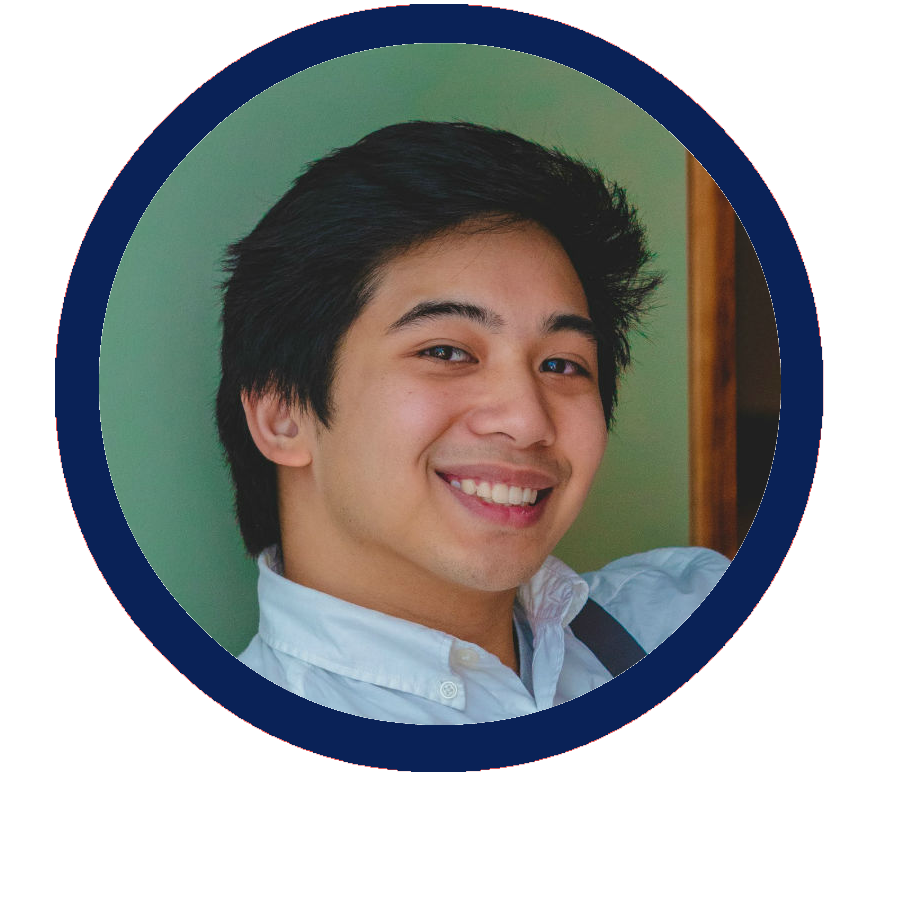

I am a recent graduate of UW-Madison with a B.S. in Computer Science and Communications. As software development is evolving towards more collaboration, developers must evolve as well. Equipped with the technical and interpersonal skills of my education, I'm ready and excited to impact the world for the better.

Name: Gabe Pante Age: 21 Location: Madison, Wisconsin Pokémon GO: Level 40, Valor
Work Experience
Adventure Learning Programs
Dec 2018 - Dec 2019
Student Director
Adventure Learning Programs (ALPs) is a group on campus that facilitates workshops that challenges individuals to learn about themselves through experiential education and adventure based learning. In doing so, participants improve their teamwork, communication, and trust with each other.
As a Student Director, I was responsible for daily needs such as interfacing with workshop requestors, delegating tasks to other project teams, and holding meetings within ALPs leadership to improve our internal and external programming. In addition, I aided in long term goals such as staff hiring, training, and collaborating with other organizations
In ALPs, I was heading the organization of approximately 55 other students with 2 other co-directors. While we would often share responsibilities, I was primarily tasked with organizational and logistical tasks within the office. I extended my computer science background into ALPs by developing more efficient solutions to our tasks. These innovations include:
Creating graphics and data visualizations for our biannual budget presentation (99.6% of our $190k budget had been approved!)
Automating a Google Calendar to populate with workshop dates for our facilitators and our clients
Using Google Scripts to automate processes including facilitator staffing, spreadsheet presentation/styling, and intraorganizational outreach
Organizational skills I've learned as a Student Director include interfacing with each of our committees (Staff Training, Internal Affairs, Marketting, Diversity & Inclusion, and Program Development) to give them the tools they need to succeed, hosting meetings with the full-time staff advisor and the committee heads, and documenting notes from each meeting. In the event these committee heads needed information from the rest of our staff, I would poll, organize, and aggregate the data for their individual uses.
Adventure Learning Programs
Nov 2017 - Dec 2018
Facilitator
As a facilitator, I would be assigned a group for which I would host a workshop. To do so, I would reach out to the requestor, hold a meeting to assess their group, plan a workshop that suits their needs and group state, and execute the workshop with other fellow facilitators.
Being a facilitator, we are all trained in the ideologies of experiential education (learning through doing) and the experential learning cycle, which helps transitions ideas or skills learned through games and activities into real world applications. Additionally, we were all trained with up-to-date safety protocols on ropes courses ranging from 1 foot to 45 feet off the ground as well as a variety of speciality elements including ziplines, Giant's Swing, and the Quadraphenia.
While I was primarily responsible for executing workshops, I've also shown initiative through various other forms of involvement. In my time as a facilitator, I've partcipated in:
Program Development Committee: Brainstorm and implement new ways to improve our programming such as new workshop types, new props, or new activities that met every other week to discuss our projects
Hiring Committee: Create and advertise an application for the facilitator role, review and interview applications and applicants, and onboard the new hires into ALPs. As a director, I've also taken the role of training the hiring committees that have come after me.
Lead Facilitating: Taking charge of individal workshop logistics such as hosting meetings with the requestor for their goals, leading the planning of the workshop with fellow facilitators, organizing safety forms and waivers, and debriefing the workshop to improve our programming in the future.
Below is a video at our ropes course that gathers the thoughts from some of our staff during an interview.
Education
University of Wisconsin - Madison
Sept 2016 - Dec 2019
B.S. Computer Science & B.S. Communication Arts
My time at UW Madison was primarily focused on Computer Science with a secondary focus in Communication Arts. Here, I learned CS basics in Java, Python, Data Structures, and Algorithms while also exploring advanced topics such as Machine Learning, Data Science, and Artifical Intelligence. Due to the importance of teams and collaborative work, I've also pursued a major in communications. In communications, I've studied the psychology of interpersonal communication, group dynamics, and decision making.
Intro to Java
Learning the basics of OOP such as Encapsulation, Data Abstraction, Polymorphism and Inheritance.
Java, Eclipse IDE
Intro to Algorithms
Exploring different paradigms of programming algorithms such as graphs, dynamic programming, and randomized algorithms through the lens of big-O notation.
LaTeX
Intro to Artificial Intelligence
Exploring different models of approaching AI such as Support Vector Machines, Neural Networks, Machine Learning, Bayesian Networks, and Speech Recognition
Sublime Text, CLI
Database Management Systems
Creating a basis for RDMS knowledge through SQL, database formation, and ACID properties.
SQLite
Data Management for Data Science
Walking through the workflow of a data scientist from data collection to cleaning to analysis to presentation.
Jupytr Notebook, Python (Pandas)
Software Engineering
Developing a project over the course of the semester with a team via an Agile-Like SDLC
Introducing the basics of communications, both in terms of writing and in psychology. Examples of writings are grants, meeting minutes, and press releases.
Interpersonal Communication
Learning the mechanics of communicating between two individuals through efficient and effective communication strategies
Online Communication
Using the internet and the web to communicate between parties and analyzing the differences between online and offline interactions
Critical Internet Studies
Exploring the origins of the internet from packet switching, to undersea cables, to the future of data ethics
Communication & Conflict Resolution
Exploring ways to reduce affect-based conflict and create productive conflict while also learning how to make the most out of conflict.
Communication in Complex Organizations
Forming a streamlined, justified, and effective decision making process through the lens of personal, group, and organizational decision making.
Communication & Human Behavior
Analyzing the uses and effects of media on humans and society ranging from social networking sites, to devices, to advertisements.
In my undergraduate experience, I have found the Filipino American Student Organization (FASO), and I've been able to devote a lot of my time and passion into this organization. Joining as a member in my first year, I was quickly inspired by the community and cameraderie within this organization and as a result, it has become a core part of my experience at UW. As a member of the executive board, we were responsible for hosting events that taught about Filipino culture and community, and sharing that with the campus at large. Below are the positions I've been elected to on FASO's executive board:
Fundraising Chair: During my second year, I was FASO's fundraising chair. My responsibilities included brainstorming, organizing, and executing fundraising events. Examples of events were: selling Tsokolate (Filipino Hot Chocolate), Smash Bros Tournament, and selling Halo-Halo (Filipino Dessert).
Vice President: Becoming Student Director my third year, I had to split my time between the two organizations. My role as Vice President was to serve as an intermediary between the board and the general body, as well as between the presidents and the rest of the board. I would help each individual chair by holding check-in meetings each month, while also checking in casually more frequently. As we were all close-knit on board, I had to tread the line between authority and friend frequently, and I've learned to balance the two accordingly.
Advisor: In my final year of undergrad, I was chosen as the advisor for the upcoming executive board. This purpose of this role was to help guide the new board without taking charge; allowing them to grow and create new ideas but with the safety of avoiding old mistakes. Responsibilities included deadline reminders for grants, and providing historical knowledge for different events or processes.